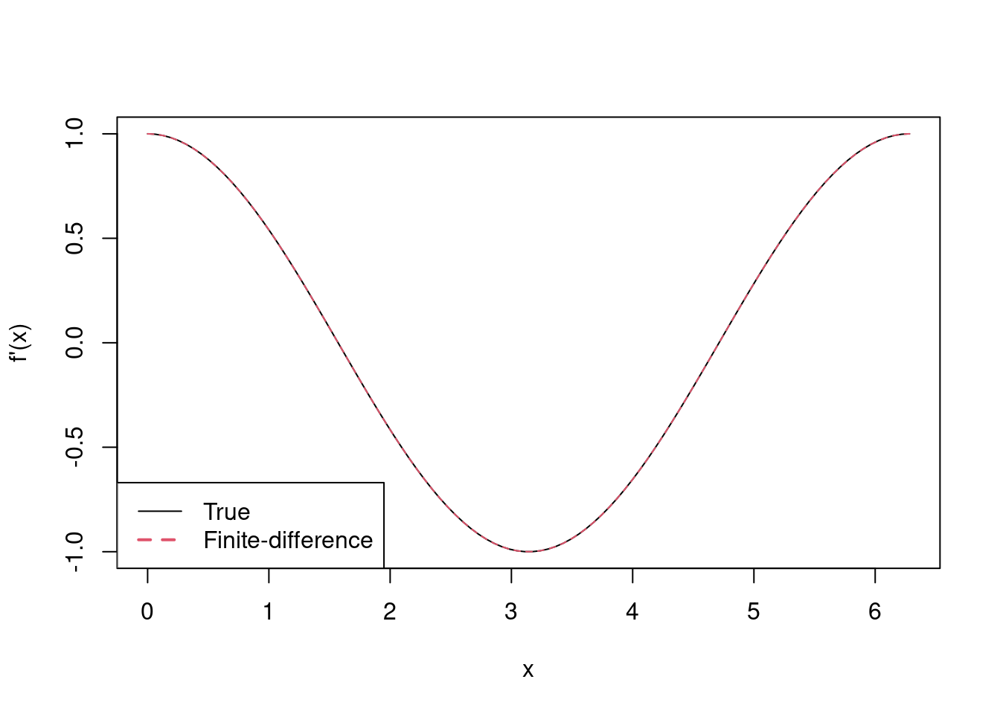
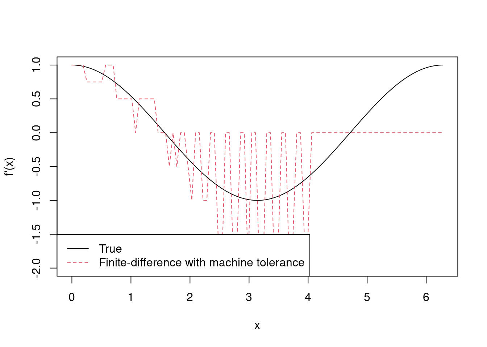
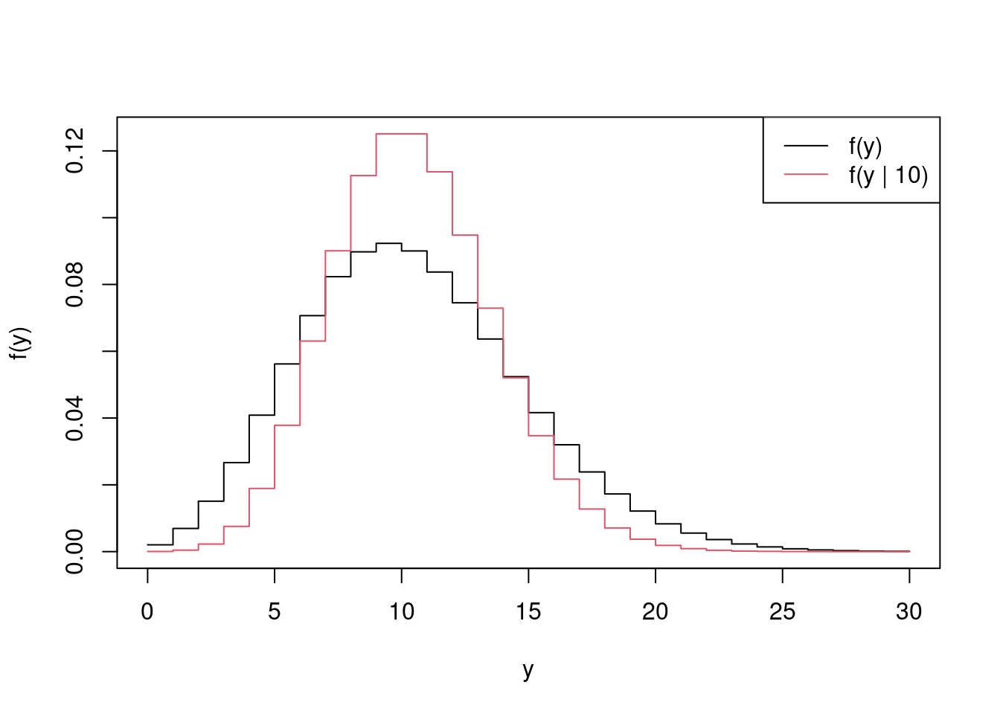
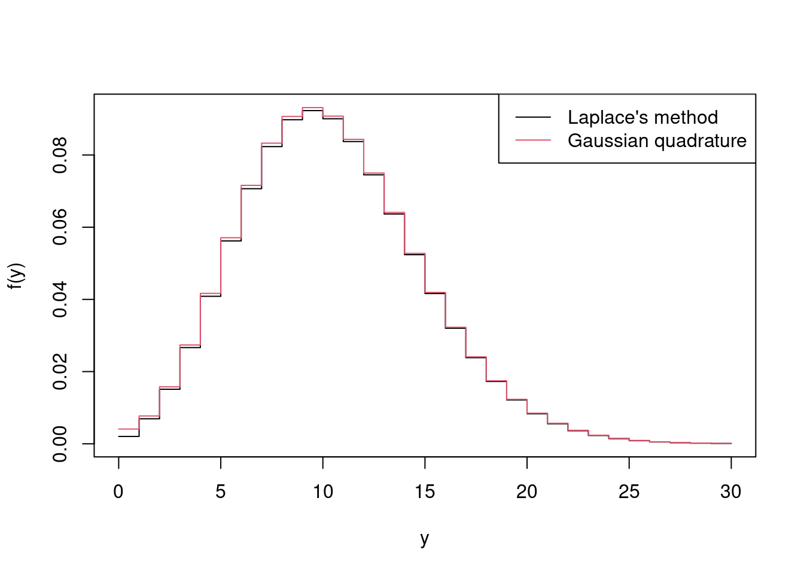
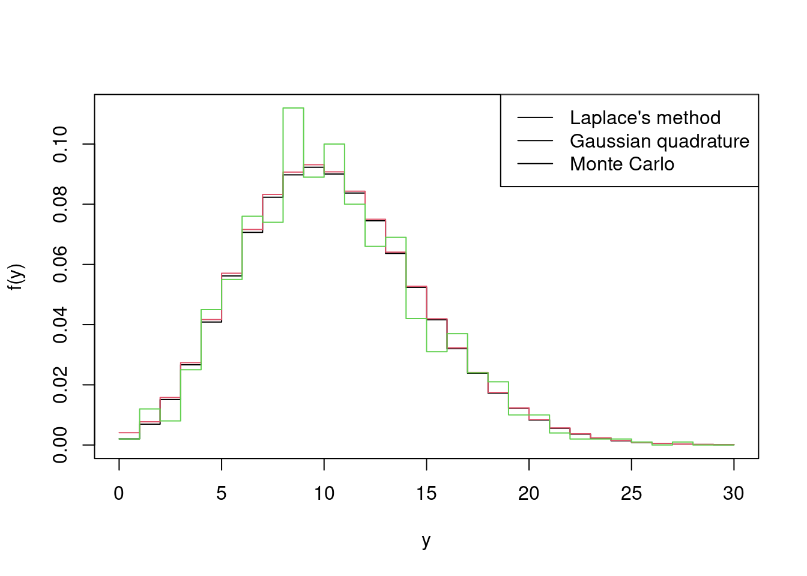
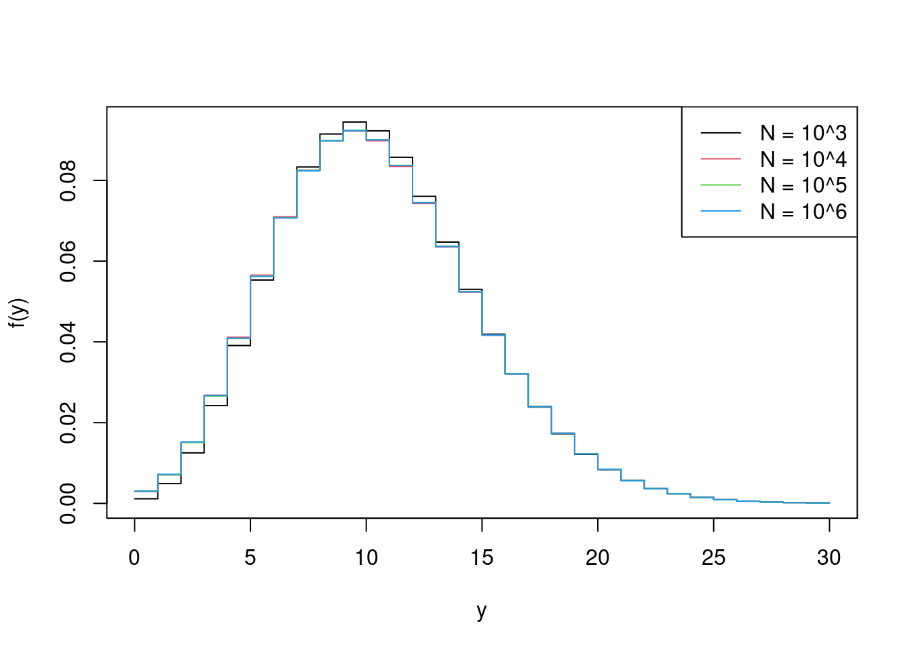

4 Numerical Calculus
4.1 Motivation
Example 4.1 In statistics, we often rely on the Normal distribution with pdf
\[
\phi(x; \mu, \sigma^2) = \dfrac{1}{\sqrt{2 \pi \sigma^2}} \exp\left[-\dfrac{(x - \mu)^2}{2 \sigma^2}\right]
\]
and cdf
\[
\Phi(x; \mu, \sigma^2) = \int_{-\infty}^x \phi(x; \mu, \sigma^2) \text{d} x.
\]
Unfortunately no closed form exists for \(\Phi(x; \mu, \sigma^2)\). However, if \(x\), \(\mu\) and \(\sigma\) are stored in R as x, mu and sigma, we can still evaluate \(\Phi(x; \mu, \sigma^2)\) with pnorm(x, mu, sigma). This is one example of a frequently-occurring situation in which we somehow want to evaluate an intractable integral. This raises the question: are there generic methods that let us evaluate intractable integrals? The answer is often numerical integration.
Remark. In this chapter, we’ll consider generic methods for integration, i.e. that work in many scenarios. Sometimes, such as evaluating \(\Phi(x; \mu, \sigma^2)\), specific algorithms will give more accurate results. This is what R does for pnorm().
4.2 Numerical Differentiation
In Chapter 5 we will cover optimisation of functions, such as numerically finding maximum likelihood estimates when analytical solutions aren’t available. We’ll see that supplying derivatives can considerably improve estimation, typically in terms of reducing computation time. Here we’ll cover some useful results in terms of differentiation of matrices, which will later prove useful. No knowledge of analytical matrix calculus beyond these results will be needed for MTH3045. The matrix cookbook (Petersen and Pedersen 2012), however, can provide you with a much more thorough set of differentiation rules, should you ever need them.
4.2.1 Differentiation definitions
Definition 4.1 (Gradient operator) Consider \(f : \mathbb{R}^n \to \mathbb{R}\), which we’ll consider a function of vector \(\mathbf{x} = (x_1, \ldots, x_n)^\text{T}\). The gradient operator, \(\nabla\), is defined as \[ \nabla f(\mathbf{x}) = \left(\begin{array}{c} \frac{\partial f(\mathbf{x})}{\partial x_1}\\ \frac{\partial f(\mathbf{x})}{\partial x_2}\\ \vdots \\ \frac{\partial f(\mathbf{x})}{\partial x_n}\\ \end{array}\right). \]
Note that in MTH3045 we will have no cause to consider multivariate functions, i.e. to consider \(\mathbf{f} : \mathbb{R}^n \to \mathbb{R}^m\), for \(m > 1\).
Definition 4.2 (Hessian matrix) Consider again \(f : \mathbb{R}^n \to \mathbb{R}\). The Hessian matrix is the matrix of second derivatives of \(f\), whereas the gradient operator considered first derivatives, and is given by \[ \nabla^2 f(\mathbf{x}) = \left(\begin{array}{cccc} \frac{\partial^2 f}{\partial x_1^2} & \frac{\partial^2 f}{\partial x_1 \partial x_2} & \cdots & \frac{\partial^2 f}{\partial x_1 \partial x_n} \\ \frac{\partial^2 f}{\partial x_2 \partial x_1} & \frac{\partial^2 f}{\partial x_2^2} & \cdots & \frac{\partial^2 f}{\partial x_2 \partial x_n} \\ \vdots & \vdots & \ddots & \vdots \\ \frac{\partial^2 f}{\partial x_n \partial x_1} & \frac{\partial^2 f}{\partial x_n \partial x_2} & \cdots & \frac{\partial^2 f}{\partial x_n^2} \\ \end{array}\right). \]
The Hessian matrix plays an important role in statistics, in particular for estimating parameter uncertainty via the Fisher information, which is covered in MTH3028. In the next chapter, we’ll also see that it’s important for optimisation.
Remark. If \(\tilde{\mathbf{x}}\) is at a minimum of \(f(\mathbf{x})\) then the gradient vector w.r.t. \(\mathbf{x}\) should be all zero, i.e. \(\nabla f(\mathbf{x}) = \mathbf{0}\) and, additionally, the Hessian matrix, i.e. \(\nabla^2 f(\mathbf{x})\) should be positive definite.
4.2.2 Differentiation rules
Now consider \(g : \mathbb{R}^n \to \mathbb{R}\) a function of \(\bf x\) that, for fixed \(\bf A\), takes the quadratic form \(g(\mathbf{x}) = \mathbf{x}^\text{T} \mathbf{Ax}\) for \(n \times n\) matrix \(\mathbf{A}\) and \(n\)-vector \(\mathbf{x}\). Then \[ \nabla g(\mathbf{x}) = (\mathbf{A} + \mathbf{A}^\text{T})\mathbf{x} ~~~\text{and}~~~ \nabla^2 g(\mathbf{x}) = \mathbf{A} + \mathbf{A}^\text{T}.\] Note that in the case of symmetric \(\bf A\), \(\nabla g(\mathbf{x}) = 2\mathbf{Ax}\) and \(\nabla^2 g(\mathbf{x}) = 2\mathbf{A}\).
Next consider \(h : \mathbb{R}^n \to \mathbb{R}\) a function of \(n\)-vector \(\bf x\) and \(p\)-vector \(y\) that, for fixed \(n \times n\) matrix \(\bf A\) and \(n \times p\) matrix \(\bf B\), takes the quadratic form \(h(\mathbf{x}, \mathbf{y}) = (\mathbf{x} + \mathbf{By})^\text{T} \mathbf{A}(\mathbf{x} + \mathbf{By})\). Then \[ \dfrac{\partial h(\mathbf{x}, \mathbf{y})}{\partial \mathbf{x}} = (\mathbf{A} + \mathbf{A}^\text{T})(\mathbf{x} + \mathbf{By})~~~\text{and}~~~ \dfrac{\partial h(\mathbf{x}, \mathbf{y})}{\partial \mathbf{y}} = \mathbf{B}^T (\mathbf{A} + \mathbf{A}^\text{T}) (\mathbf{x} + \mathbf{By}), \] and also \[ \dfrac{\partial^2 h(\mathbf{x}, \mathbf{y})}{\partial \mathbf{x} \partial \mathbf{x}^\text{T}} = \mathbf{A} + \mathbf{A}^\text{T}~~~\text{and}~~~ \dfrac{\partial^2 h(\mathbf{x}, \mathbf{y})}{\partial \mathbf{y} \partial \mathbf{y}^\text{T}} = \mathbf{B}^\text{T}(\mathbf{A} + \mathbf{A}^\text{T})\mathbf{B}. \]
Note that above we use partial derivative notation, i.e. \(\partial\), as opposed to gradient operator notation, i.e. \(\nabla\), as the derivatives are not w.r.t. all variables.
Example 4.2 (Maximum likelihood estimates of regression coefficients in the normal linear model via matrix calculus) Consider the normal linear model \(\mathbf{Y} = \mathbf{X} \boldsymbol{\beta} + \boldsymbol{\varepsilon}\), where \(\mathbf{Y} = (Y_1, \ldots, Y_n)^\text{T}\), \(\mathbf{X}\) is an \(n \times (p + 1)\) design matrix, \(\boldsymbol{\beta}\) is a \((p + 1)\)-vector of regression coefficients, and \(\boldsymbol{\varepsilon}= (\varepsilon_1, \ldots, \varepsilon_n)^\text{T}\) with independent \(\varepsilon_i \sim N(0, \sigma^2)\). The maximum likelihood estimate of \(\boldsymbol{\beta}\), denoted \(\hat{\boldsymbol{\beta}}\), minimises the RSS, i.e. minimises \((\mathbf{y} - \mathbf{X} \boldsymbol{\beta})^\text{T}(\mathbf{y} - \mathbf{X} \boldsymbol{\beta})\) if we observe \(\mathbf{y} = (y_1, \ldots, y_n)^\text{T}\). Differentiating w.r.t. \(\boldsymbol{\beta}\) gives \(-\mathbf{X}^\text{T} (\mathbf{y} - \mathbf{X} \boldsymbol{\beta}) - (\mathbf{y} - \mathbf{X} \boldsymbol{\beta})^\text{T} \mathbf{X}\), which simplifies to \(-2\mathbf{X}^\text{T} (\mathbf{y} - \mathbf{X} \boldsymbol{\beta})\) as \(\mathbf{X}^\text{T} (\mathbf{y} - \mathbf{X} \boldsymbol{\beta})\) and \((\mathbf{y} - \mathbf{X} \boldsymbol{\beta})^\text{T} \mathbf{X}\) are both \(n\)-vectors. The derivative is zero at \(\hat{\boldsymbol{\beta}}\) and so \(-2\mathbf{X}^\text{T} (\mathbf{y} - \mathbf{X} \hat{\boldsymbol{\beta}}) = 0\). Therefore \(\hat{\boldsymbol{\beta}}\) is the solution of \(\mathbf{X}^\text{T} \mathbf{X} \hat{\boldsymbol{\beta}} = \mathbf{X}^\text{T} \mathbf{y}\) or alternatively \(\hat{\boldsymbol{\beta}} = (\mathbf{X}^\text{T} \mathbf{X})^{-1} \mathbf{X}^\text{T} \mathbf{y}\), as we were given in Topic 3.
4.2.3 Finite-differencing
Consider again \(f(\mathbf{x})\), a function of vector \(\bf x\).
Definition 4.3 (Partial derivative) Consider \(f: \mathbb{R}^n \to \mathbb{R}\) for \(n\)-vector \(\bf x\). Let, \(\mathbf{e}_i\) be the \(n\)-vector comprising entirely zeros, except for its \(i\)th element, which is one. Then the partial derivative of \(f(\mathbf{x})\) w.r.t. \(x_i\), the \(i\)th element of \(\bf x\), is \[ \dfrac{\partial f(\mathbf{x})}{\partial x_i} = \lim_{h \to 0} \dfrac{f(\mathbf{x} + h \mathbf{e}_i) - f(\mathbf{x})}{h}. \]
The above definition leads us to the finite-difference partial derivative approximation
\[ \dfrac{\partial f(\mathbf{x})}{\partial x_i} \simeq \dfrac{f(\mathbf{x} + \delta \mathbf{e}_i) - f(\mathbf{x})}{\delta}, \]
where \(\delta\) is small.
Example 4.3 (Finite-differencing of $\sin(x)$) Use finite-differencing to approximate the derivative of \(f(x) = \sin(x)\) for \(x \in [0, 2\pi]\), and compare its accuracy to the true derivative.
First, let’s calculate \(f\) and its true derivative, i.e. \(f'(x) = \cos(x)\), and store this as partial0 for \(\{x_i\}\), \(i = 1, \ldots, 100\), a set of equally-spaced points on \([0, 2\pi]\).
> n <- 100
> x <- seq(0, 2 * pi, l = 100)
> f <- sin(x)
> partial0 <- cos(x)Now we’ll set \(\delta = 10^{-6}\) and calculate \(x_i + \delta\), for each \(x_i\), i.e. each element of x, so that the finite-difference approximation to the derivative is given by \([\sin(x_i + 10^{-6}) - \sin(x_i)] / 10^{-6}\), which is calculated below and stored as partial1.
> delta1 <- 1e-6
> x1 <- x + delta1
> f1 <- sin(x1)
> partial1 <- (f1 - f) / delta1We’ll then plot the \(f'(x)\) against it finite-difference approximation.
> matplot(x, cbind(partial0, partial1), type = 'l', xlab = 'x', ylab = "f'(x)")
> legend('bottomleft', lty = 1:2, col = 1:2, lwd = 1:2,
+ legend = c('True', 'Finite-difference'))
In fact, the true derivative and its finite-difference approximation are so similar that’s it’s difficult to distinguish the two, but they’re both there in the plot!
Remark. We might be tempted to choose \(\delta\) as small as possible. Suppose we were to repeat Example 4.3 with \(\delta = \epsilon_m\), i.e. R’s machine tolerance. The following calculates the finite-difference approximation as partial2 and plots this against the true value of \(f'(x)\).
> delta2 <- .Machine$double.eps
> x2 <- x + delta2
> f2 <- sin(x2)
> partial2 <- (f2 - f) / delta2
> matplot(x, cbind(partial0, partial2), type = 'l', xlab = 'x', ylab = "f'(x)")
> legend('bottomleft', lty = 1:2, col = 1:2, bg = 'white',
+ legend = c('True', 'Finite-difference with machine tolerance'))
Using \(\delta = \epsilon_m\) gives a terrible approximation to \(f'(x)\), which gets worse as \(x\) increases. We’ve actually encountered an example calculation error, which was introduced in Chapter 2.
Example 4.4 (Finite-differencing of the multivariate Normal log-likelihood) Find \(\partial \log f(\mathbf{y} \mid \boldsymbol{\mu}, \boldsymbol{\Sigma}) / \partial y_i\) analytically, for \(i = 1, \ldots, p\), where \(f(\mathbf{y} \mid \boldsymbol{\mu}, \boldsymbol{\Sigma})\) is the \(MVN_p(\boldsymbol{\mu}, \boldsymbol{\Sigma})\) pdf, for arbitrary \(\mathbf{y}\), \(\boldsymbol{\mu}\) and \(\boldsymbol{\Sigma}\). Evaluate this for \(\mathbf{y}\), \(\boldsymbol{\mu}\) and \(\boldsymbol{\Sigma}\) as in Example 3.2. Then approximate the same derivative using finite-differencing.
The logarithm of the \(MVN_p(\boldsymbol{\mu}, \boldsymbol{\Sigma})\) pdf is given by
\[
\log f(\mathbf{y} \mid \boldsymbol{\mu}, \boldsymbol{\Sigma}) = -\dfrac{1}{2} \left[p \log(2 \pi) + \log(|\boldsymbol{\Sigma}|) + ({\bf y} - {\boldsymbol \mu})^\text{T} {\boldsymbol \Sigma}^{-1} ({\bf y} - {\boldsymbol \mu}) \right]
\]
which we know, from Example 3.13, we can evaluate with dmvn3(). Using the above properties
\[
\dfrac{\partial \log f(\mathbf{y} \mid \boldsymbol{\mu}, \boldsymbol{\Sigma})}{\partial \mathbf{y}} = -{\boldsymbol \Sigma}^{-1} ({\bf y} - {\boldsymbol \mu})
\]
since \(\boldsymbol{\Sigma}\) is symmetric.
We can evaluate this for \(\mathbf{y}\), \(\boldsymbol{\mu}\) and \(\boldsymbol{\Sigma}\) as in Example 3.2 with the following
> y <- c(.7, 1.3, 2.6)
> mu <- 1:3
> Sigma <- matrix(c(4, 2, 1, 2, 3, 2, 1, 2, 2), 3, 3)
> deriv1 <- -solve(Sigma, y - mu)which gives
> as.vector(deriv1)## [1] -0.08 0.38 -0.14To approximate the derivative by finite-differencing, it makes sense to write a multi-purpose function for finite differencing, which we’ll call fd().
> fd <- function(x, f, delta = 1e-6, ...) {
+ # Function to evaluate derivative by finite-differencing
+ # x is a p-vector
+ # fn is the function for which the derivative is being calculated
+ # delta is the finite-differencing step, which defaults to 10^{-6}
+ # returns a vector of length x
+ f0 <- f(x, ...)
+ p <- length(x)
+ f1 <- numeric(p)
+ for (i in 1:p) {
+ x1 <- x
+ x1[i] <- x[i] + delta
+ f1[i] <- f(x1, ...)
+ }
+ (f1 - f0) / delta
+ }Then we can use this with dmvn3() with the following
> deriv2 <- fd(y, dmvn3, mu = mu, Sigma = Sigma)which gives
> deriv2## [1] -0.0800002 0.3799993 -0.1400008and is the same as the analytical result
> all.equal(deriv1, deriv2)## [1] "Mean relative difference: 2.832689e-06"once we allow for error in the finite-difference approximation.
4.3 Quadrature
Another common requirement in statistics that some integral needs to be evaluated. To start, let’s consider a simple integral of the form \[ I = \int_a^b f(x) \text{d}x. \]
We’ll first take a look at some deterministic approaches to numerically evaluating integrals. In fact, these all boil down to assuming that \[ I \simeq \sum_{i=1}^N w_i f(x_i^*) \] for some weights \(w_i\) and nodes \(x_i^*\), \(i = 1, \ldots, N\). Note that here we’re considering the so-called composite approach to approximating an interval, i.e. in which a rule is applied over a collection of sub-intervals.
Definition 4.4 (Relative absolute error) The relative absolute error, or sometimes just relative error, of an estimate of some true value is given by \[ \left\vert \dfrac{\text{true value} - \text{estimate}}{\text{true value}} \right\vert. \]
4.3.1 Midpoint rule
Perhaps the first numerical integration scheme we come across is the mid point rule. Put simply, we divide \([a, b]\) into \(N\) equally-sized intervals, and use the midpoints of these as the nodes, \(x_i^*\). This gives
\[ \int_a^b f(x) \text{d}x \simeq h \sum_{i = 1}^N f(x_i^*), \]
where \(x_i^* = a + (i - 0.5)(b - a)/N\) and \(h = (b - a) / N\). The error in the approximation is \(O(h^2)\). Thus more intervals reduces \(h\) and gives a more accurate approximation.
Example 4.5 (Midpoint rule) Consider the integral \(\int_0^1 \exp(x) \text{d}x = \exp(1) - 1 \simeq 1.7182818\). Use R and the midpoint rule to estimate the integral with \(N = 10\), \(100\) and \(1000\). Then compare the relative absolute error of each.
We’ll start by calculating the true value of the integral, which we’ll stored as true.
> true <- exp(1) - 1Then we’ll store the values of \(N\) that we’re testing as N_vals.
> N_vals <- 10^c(1:3)The following then creates a vector, midpoint, in which to store the integral approximations, and calculates the approximations with a for loop. Inside the loop the integration nodes (i.e. the midpoints) and \(h\) are calculated.
> midpoint <- numeric(length(N_vals))
> for (i in 1:length(N_vals)) {
+ N <- N_vals[i]
+ nodes <- (1:N - .5) / N
+ h <- 1 / N
+ midpoint[i] <- h * sum(exp(nodes))
+ }
> midpoint## [1] 1.717566 1.718275 1.718282The relative absolute error for each is then given in the vector rel_err_mp below.
> rel_err_mp <- abs((true - midpoint) / true)
> rel_err_mp## [1] 4.165452e-04 4.166655e-06 4.166667e-08We clearly see that the absolute error reduces by two factors of ten for each factor of ten increase in \(N\), which is consistent with the above comment of \(O(h^2)\) error, where here \(h = 1/N\).
4.3.2 Simpson’s rule
The midpoint rule works simply by approximating \(f(x)\) over a sub-interval of \([a, b]\) by a horizontal line. The trapezium rule (which we’ll overlook) assumes a straight line. Simpson’s rule is derived from a quadratic approximation and given by
\[\begin{equation} \int_a^b f(x) \text{d}x \simeq \dfrac{h}{6} \left(f(a) + 4 \sum_{i = 1}^N f(x_{1i}^*) + 2\sum_{i = 1}^{N - 1} f(x_{2i}^*) + f(b)\right), \tag{4.1} \end{equation}\]
where \(x_{1i}^* = a + h(2i - 1) / 2\), \(x_{2i}^* = a + ih\) and \(h = (b - a)/N\). Note that Simpson’s rule requires \(N + 1\) more evaluations of \(f\) than the midpoint rule; however, a benefit of those extra evaluations is that its error reduces to \(O(h^4)\).
Example 4.6 (Simpson's rule) Now use R and Simpson’s rule to approximate the integral \(\int_0^1 \exp(x) \text{d}x = \exp(1) - 1\) with \(N = 10\), \(100\) and \(1000\), compare the relative absolute error for each, and against those of the midpoint rule in Example 4.5.
We already have true and N_vals from Example 4.5, and we can use a similar for loop to approximate the integral using Simpson’s rule. The main difference is that we create two sets of nodes, nodes1 and nodes2, which correspond to the \(x_{1i}\)s and \(x_{2i}\)s in Equation (4.1), respectively. The integral approximations are stored as simpson
> simpson <- numeric(length(N_vals))
> N_vals <- 10^c(1:3)
> for (i in 1:length(N_vals)) {
+ N <- N_vals[i]
+ h <- 1 / N
+ simpson[i] <- 1 + exp(1)
+ nodes1 <- h * (2*c(1:N) - 1) / 2
+ simpson[i] <- simpson[i] + 4 * sum(exp(nodes1))
+ nodes2 <- h * c(1:(N - 1))
+ simpson[i] <- simpson[i] + 2 * sum(exp(nodes2))
+ simpson[i] <- h * simpson[i] / 6
+ }
> print(simpson, digits = 12)## [1] 1.71828188810 1.71828182847 1.71828182846and we print this to 11 decimal places so we can see where the approximations changes with \(N\). Finally we calculate the relative absolute errors, rel_err_simp,
> rel_err_simp <- abs((true - simpson) / true)
> rel_err_simp## [1] 3.471189e-08 3.472270e-12 6.461239e-16and we see a dramatic improvement in the accuracy of approximation that Simpson’s rule brings, with relative absolute errors of the same order of magnitude as those form the midpoint rule using \(N = 1000\) achieved with \(N=10\) for Simpson’s rule. Note, though, that for given \(N\), Simpson’s rule requires \(N + 1\) more evaluations of \(f()\).
4.3.3 Gaussian quadrature
We’ve seen that Simpson’s rule can considerably improve on the midpoint rule for approximating integrals. However, we might still consider both restrictive in that they consider an equally-spaced set of nodes.
Definition 4.5 (Gauss-Legendre quadrature rule) Consider \(g(x)\), a polynomial of degree \(2N - 1\), and a fixed weight function \(w(x)\). Then, the Gauss-Legendre quadrature rule states that \[\int_a^b w(x) g(x) \text{d}x = \sum_{i = 1}^N w_i g(x_i),\] where, for \(i = 1, \ldots, N\), \(w_i\) and \(x_i\) depend on \(w(x)\), \(a\) and \(b\), but not \(g(x)\).
The Gauss-Legendre quadrature rule is the motivation for Gaussian quadrature, whereby we assume that the integral we’re interested in can be well-approximated by a polynomial. This results in the approximation \[\int_a^b f(x) \text{d}x \simeq \sum_{i = 1}^N w_i f(x_i)\] for a fixed set of \(x\) values, \(x_i\) with corresponding weights \(w_i\), for \(i = 1, \ldots, N\). There are many rules for choosing the weights, \(w_i\), but (perhaps fortunately) we won’t go into them in detail in MTH3045. Instead, we’ll just consider the function pracma::gaussLegrendre() (for which you’ll need to install the pracma package), where pracma::gaussLegrendre(N, a, b) produces N nodes and corresponding weights on the interval \([\)a,b\(]\), with \(N =\) N, \(a =\) a and \(b =\) b. The following produces nodes and weights for \(N = 10\) on \([0, 1]\)
> gq <- pracma::gaussLegendre(10, 0, 1)
> gq## $x
## [1] 0.01304674 0.06746832 0.16029522 0.28330230 0.42556283 0.57443717
## [7] 0.71669770 0.83970478 0.93253168 0.98695326
##
## $w
## [1] 0.03333567 0.07472567 0.10954318 0.13463336 0.14776211 0.14776211
## [7] 0.13463336 0.10954318 0.07472567 0.03333567Figure 4.1: Node and weights for Gauss-Legendre quadrature with \(N = 10\) for integral on [0, 1].
which we can see in Figure 4.1, and shows that nodes are spread further apart towards the middle of the \([0, 1]\) range, but given more weight. Note that pracma::gaussLegrendre() is named so because it implements Gauss-Legendre quadrature, i.e. Gaussian quadrature with Legendre polynomials7.
Example 4.7 (Gaussian quadrature) Now use R and Gauss-Legendre quadrature to approximate the integral \(\int_0^1 \exp(x) \text{d}x\) with \(N = 10\). Explore what value of \(N\) gives a comparable estimate to that of the midpoint rule with \(N = 100\) based on relative absolute error.
We can re-use true from Example 4.5 and then we’ll consider \(N=10\), 4 and 3, which we’ll call N_vals, and store the resulting integral approximations in gauss.
> N_vals <- c(10, 4, 3)
> gauss <- numeric(length(N_vals))
> for (i in 1:length(N_vals)) {
+ N <- N_vals[i]
+ xw <- pracma::gaussLegendre(N, 0, 1)
+ gauss[i] <- sum(xw$w * exp(xw$x))
+ }
> gauss## [1] 1.718282 1.718282 1.718281The relative absolute errors, rel_err_gauss,
> rel_err_gauss <- abs((true - gauss) / true)
> rel_err_gauss## [1] 2.584496e-16 5.429651e-10 4.795992e-07show that, having considered \(N = 3, 4, 10\), choosing \(N = 3\) for Gaussian quadrature gives closest relative absolute error to that of the midpoint rule with \(N = 100\), which really is quite impressive. It is important to note, though, that \(f(x) = \exp(x)\) is a very smooth function. For wiggler functions, larger \(N\) is likely to be needed, and improvements in performance, such as Gaussian quadrature over the midpoint rule, might be significantly less.
Example 4.8 (Poisson marginal approximation using Gaussian quadrature) Consider a single random variable \(Y \mid \lambda \sim \text{Poisson}(\lambda)\), where we can characterise our prior beliefs about \(\lambda\) as \(\lambda \sim \text{N}(\mu, \sigma^2)\). Use Gaussian quadrature with \(N = 9\) to estimate the marginal pdf of \(Y\) if \(\mu = 10\) and \(\sigma = 3\).
The marginal distribution of \(Y\) is given by \[ f(y) = \int_{-\infty}^\infty f(y \mid \lambda) f(\lambda) \text{d}\lambda. \]
Remark. The three sigma rule is a heuristic rule of thumb that 99.7% of values lie within three standard deviations of the mean.
Hence for the \(\text{N}(10, 3^2)\) distribution we should expect 99.7% of values to lie within \(10 \pm 3 \times3\). Hence we’ll take this as our range for the Gaussian quadrature nodes.
> mu <- 10
> sigma <- 3
> N <- 9 # no. of nodes
> xw <- pracma::gaussLegendre(
+ N,
+ mu - 3 * sigma, # left-hand end
+ mu + 3 * sigma # right-hand end
+ )
> xw## $x
## [1] 1.286558 2.475720 4.479657 7.081719 10.000000 12.918281 15.520343
## [8] 17.524280 18.713442
##
## $w
## [1] 0.7314695 1.6258334 2.3454963 2.8111237 2.9721542 2.8111237 2.3454963
## [8] 1.6258334 0.7314695which are stored as xw$x with corresponding weights xw$w, \(w_1, \ldots, w_N\).
Next we want a set of values at which to evaluate \(f(y)\), and for this we’ll choose \(0, 1, \ldots, 30\), which we can create in R with
> y_vals <- 0:30Then we can estimate \(f(y)\) as
\[
\hat f(y) \simeq \sum_{i = 1}^N w_i f(y \mid \lambda_i^*) f(\lambda_i^*).
\]
The following code gives \(\hat f(y)\) as fhat for \(y\) in the set of values y_vals.
> m <- length(y_vals)
> fhat <- numeric(m)
> for (i in 1:m) {
+ fhat[i] <- sum(xw$w * dpois(y_vals[i], xw$x) *
+ dnorm(xw$x, mu, sigma))
+ }Finally, we’ll plot \(\hat f(y)\) against the pdf of the Poisson(\(10\)) distribution
> matplot(y_vals, cbind(fhat, dpois(y_vals, mu)), lwd = 1,
+ col = 1:2, lty = 1, type = 'l', xlab = 'y', ylab = 'f(y)')
> legend('topright', c("f(y)", "f(y | 10)"),
+ lty = 1, col = 1:2)
which demonstrates that \(f(y)\) is broader than \(f(y \mid 10)\), which is to be expected given that \(f(y)\) integrates out the variability in \(\lambda\) given by the \(\text{N}(10, 3^2)\) distribution.
4.3.4 One-dimensional numerical integration in R
Unsurprisingly, R has a function for one-dimensional numerical integration. It’s called integrate(). It uses a method that builds on Gaussian quadrature, but we won’t go into its details. Use of integrate(), however, is fairly straightforward.
Example 4.9 (Integration with integrate()) Evaluate the integral \(\int_0^1 \exp(x) \text{d}x = \exp(1) - 1\) using R’s integrate() function with \(N = 10\) and report its relative absolute error.
We can use the following code, where the first argument to integrate() is the function we’re integrating, the second and third are the lower and upper ranges of the definite integral, and subdivisions is the maximum number of nodes to use in the approximation, which defaults to 100.
> true <- exp(1) - 1
> estimate <- integrate(function(x) exp(x), 0, 1, subdivisions = 10)
> rel_err <- abs(true - estimate$value) / trueNote above that the absolute error is similarly tiny to that of Gaussian quadrature above. The values themselves, being so close to the machine tolerance, are incomparable. But we can be sure that the approximation is incredibly accurate.
4.3.5 Multi-dimensional quadrature
Now suppose that we want to integrate a multi-variable function over some finite range. For simplicity, we’ll just consider the case of function of two variables, \(f(x, y)\). Then, by the earlier one-dimensional Gaussian quadrature we have that \[ \int f(x, y_j) \text{d} x \simeq \sum_{i = 1}^M w_{x,i} f(x_i, y_j) \] from which it follows, by another application of Gaussian quadrature, that \[ \int \int f(x, y) \text{d} x \text{d} y \simeq \sum_{i=1}^{M} w_{x,i} \sum_{j=1}^N w_{y,j} f(x_i, y_j). \] Note that the weight sequences \(w_{x, i}\), \(i = 1, \ldots, M\), and \(w_{y, j}\), \(j = 1, \ldots, N\), can be specified separately, i.e. according to different quadrature rules.
More generally, we therefore have that \[ \int \ldots \int f(x_1, \ldots, x_d) \text{d} x_1 \ldots, \text{d} x_d = \int f(\mathbf{x}) \text{d} \mathbf{x} \simeq \sum_{i_1=1}^{N_1} \ldots \sum_{i_d=1}^{N_d} w_{x_1,i_1} \ldots w_{x_d, i_d} f(x_{1, i_1}, \ldots, x_{d, i_d}). \]
Remark. In practice, multi-dimensional quadrature is only feasible for small numbers of dimensions. For example, consider a \(d\)-variable function \(f\), such that each dimension has \(N\) nodes. This will require \(N^d\) evaluations of \(f\). Some useful numbers to draw upon are \(10^6\), and \(3^{15} \simeq 14348907\).
Example 4.10 (Two-variable numerical integration using the midpoint rule) Use the midpoint rule to approximate \[ I = \int_0^1 \int_0^1 \exp(x_1 + x_2) \text{d}x_1 \text{d}x_2 \] with 10 nodes for each variable, and estimate its relative absolute error.
The following sets \(d\) and finds the integral’s true value, true.
> d <- 2
> true <- (exp(1) - 1)^dWe want \(N = 10\) nodes per variable
> N <- 10and then we’ll use the following nodes for \(x_1\) and \(x_2\) on \([0, 1]\)
> x1 <- x2 <- (1:N - .5) / NThe approximation to the integral is given by
\[
\hat I = \sum_{i = 1}^N\sum_{j = 1}^N w_{ij}f(x_{1i}, x_{2j})
\]
where \(w_{ij} = N^{-d}\) for \(i, j = 1, \ldots, N\). This can can be evaluated in R with
> midpoint <- 0
> w <- 1/(N^d)
> for (i in 1:N) for (j in 1:N)
+ midpoint <- midpoint + w * exp(x1[i] + x2[j])where midpoint calculates \(\hat I\) above. The following give the true integral, alongside its midpoint-rule based estimate, and the absolute relative error of the estimate, rel.err
> c(true = true, midpoint = midpoint, rel.err = abs(midpoint - true) / true)## true midpoint rel.err
## 2.9524924420 2.9500332614 0.0008329168We see that the estimate is reasonably accurate, but we have had to evaluate \(f(x_1, x_2)\) 100 times.
Example 4.11 (Two-variable numerical integration using Gaussian quadrature) Use Gaussian quadrature to approximate \(I\) from Example 4.10 with 4 nodes for each variable, and estimate its relative absolute error.
We can take d and true from Example 4.10. Then we calculate \(\hat I\) as above, but using the integration nodes and weights of Gaussian quadrature.
> N <- 4
> xw1 <- xw2 <- pracma::gaussLegendre(N, 0, 1)
> gq <- 0
> for (i in 1:N) for (j in 1:N)
+ gq <- gq + xw1$w[i] * xw2$w[j] * exp(xw1$x[i] + xw2$x[j])
> gq## [1] 2.952492We again see below that Gaussian quadrature gives an incredibly accurate estimate
> c(true = true, guass_quad = gq, rel.err = abs(gq - true) / true)## true guass_quad rel.err
## 2.952492e+00 2.952492e+00 1.085930e-09yet now we’ve only had to evaluate \(f(x_1, x_2)\) 16 times.
Example 4.12 (Five-variable numerical integration using Gaussian quadrature) Use the Gaussian quadrature to approximate \[ I = \int_0^1 \ldots \int_0^1 \exp(\sum_{i = 1}^5 x_i) \text{d}x_1 \ldots \text{d}x_5 \] with 4 nodes for each variable, and estimate its relative absolute error.
We can proceed as in Example 4.11 by storing \(d\) as d and \(I\) as true.
> d <- 5
> true <- (exp(1) - 1)^dNow we’ll need a new tactic, because forming xw1, xw2, …, xw5 will be rather laborious. Having the same nodes and weights for each variable, i.e. for \(x_1\), \(x_2\), , \(x_5\), simplifies the following code a bit. We’ll start by setting \(n\) and getting the quadrature nodes and weights, which will be repeated for each variable.
> N <- 4
> xw <- pracma::gaussLegendre(N, 0, 1)Then we want to put together all the combinations of the nodes, X, and weights, W, that will be used.
> xxww <- lapply(1:d, function(i) xw)
> X <- expand.grid(lapply(xxww, '[[', 1))
> W <- expand.grid(lapply(xxww, '[[', 2))We then want multiply all the combinations of weights, for which would could use apply(..., 1, prod), but instead we can use rowSums() in the following way
> w <- exp(rowSums(log(W)))We then calculate \(\hat I\) and store this as gq
> gq <- sum(w * exp(rowSums(X)))and see that we still get an excellent approximation to \(I\)
> c(true = true, gauss_quad = gq, rel.err = abs(gq - true) / true)## true gauss_quad rel.err
## 1.497863e+01 1.497863e+01 2.714825e-09but have now evaluated \(\exp(\sum_{j = 1}^5 x_i)\) 1024 times.
4.4 Laplace’s method
4.4.1 An aside on Taylor series in one dimension
In MTH1002 you met Taylor series expansions. The expansion is at the centre of many useful statistical approximations.
Theorem 4.1 (Taylor series in one dimension) Consider a function \(f(x)\) in the region of a point \(x_0\) that is infinitely differentiable. Then \[ f(x) = f(x_0) + \dfrac{f'(x_0)}{1!}(x - x_0) + \dfrac{f''(x_0)}{2!}(x - x_0)^2 + \dfrac{f^{(3)}(x_0)}{3!}(x - x_0)^3 + \ldots \] where \(f'(x)\) and \(f''(x)\) denote the first and second derivatives of \(f(x)\) w.r.t. \(x\), respectively, and \(f^{(n)}(x)\) denotes the \(n\)th derivative, for \(n = 3, 4, 5, \ldots\).
From a statistical perspective we’re often just looking to approximate \(f(x)\) up to second-order terms, and hence we may work with the truncated expansion \[\begin{equation} f(x) \simeq f(x_0) + (x - x_0)f'(x_0) + \dfrac{1}{2}(x - x_0)^2 f''(x_0). \tag{4.2} \end{equation}\]
4.4.2 Definition
Definition 4.6 (Laplace's method in one dimension) Consider the integral \[\begin{equation} I_n = \int_{-\infty}^{\infty} \text{e}^{-nf(x)} \text{d}x, \tag{4.3} \end{equation}\] where \(f(x)\) is a convex function with a minimum at \(x = \tilde x\), so that \(f'(\tilde x) = 0\). The integral can be approximated, using Laplace’s method, as \[\begin{equation} I_n \simeq \text{e}^{-n[f(\tilde x)]} \sqrt{\dfrac{2 \pi}{nf''(\tilde x)}}, \tag{4.4} \end{equation}\] which is also sometimes referred to as the Laplace approximation8.
Remark. Laplace’s method can be derived from the truncated Taylor expansion of Equation (4.2). If we expand \(f(x)\) about its global maximum, which we’ll denote by \(\tilde x\), then \[ f(x) \simeq f(\tilde x) + \dfrac{1}{2}(x - \tilde x)^2 f''(\tilde x), \] since \(f'(\tilde x) = 0\). Substituting this in we get \[\begin{align*} I_n &\simeq \int_{-\infty}^{\infty} \exp\left\{-n\left[f(\tilde x) + \dfrac{1}{2}(x - \tilde x)^2 f''(\tilde x)\right]\right\} \text{d}x\\ &= \text{e}^{-n[f(\tilde x)]} \int_{-\infty}^{\infty} \exp\left\{-\dfrac{n(x - \tilde x)^2 f''(\tilde x)}{2}\right\} \text{d}x. \end{align*}\]
We recognise \(-n(x - \tilde x)^2 f''(\tilde x) / 2\) as the exponential part of the Normal(\(\tilde x\), \(1/nf''(\tilde x)\)) distribution, for which the pdf, \(\sqrt{nf''(\tilde x) / (2 \pi)} \exp\{- n(x - \tilde x)^2 f''(\tilde x) / 2\}\), integrates to unity, and so \[ \int_{-\infty}^\infty \exp\left\{-\dfrac{n(x - \tilde x)^2 f''(\tilde x) }{2} \right\} \text{d} x = \sqrt{\dfrac{2 \pi}{nf''(\tilde x)}}. \] Substituting this into \(I_n\) above we get \(I_n \simeq \text{e}^{-n[f(\tilde x)]} \sqrt{(2 \pi) / nf''(\tilde x)}\), as stated in Equation (4.4).
Knowledge of the derivation of Laplace’s method is beyond the scope of MTH3045.
Example 4.13 (Poisson marginal approximation using Laplace's method) Recall Example 4.8. Use Laplace’s method to approximate \(f(y)\).
Given Equation (4.3) we have \[ f(y, \lambda) = \lambda - y \log(\lambda) + \dfrac{1}{2 \sigma^2}(\lambda - \mu)^2 + \text{constant}, \] with \(n = 1\), which is based on swapping \(x\) for \(\lambda\). Then \[ f'(y, \lambda) = 1 - \dfrac{y}{\lambda} + \dfrac{1}{\sigma^2}(\lambda - \mu) \] and \[ f''(y, \lambda) = \dfrac{y}{\lambda^2} + \dfrac{1}{\sigma^2}. \]
We’ll first set sigsq.
> sigsq <- sigma^2We can’t find \(\tilde \lambda\) analytically, and so we’ll find it numerically instead. The following function, tilde_lambda(y, mu, sigsq), gives \(\tilde \lambda\) given \(y =\), y, \(\mu =\) mu and \(\sigma^2 =\) sigsq.
> f <- function(lambda, y, mu, sigsq)
+ - dpois(y, lambda, log = TRUE) - dnorm(lambda, mu, sqrt(sigsq), log = TRUE)
> tilde_lambda <- function(y, mu, sigsq) {
+ optimize(f, c(.1, 20), y = y, mu = mu, sigsq = sigsq)$minimum
+ }We’ll re-use mu, sigsq and y_vals from Example 4.8. We then want to find \(\tilde \lambda\) for each \(y\) in y_vals, which we’ll store as the vector tilde_lambdas.
> tilde_lambdas <- sapply(y_vals, tilde_lambda, mu = mu, sigsq = sigsq)
> tilde_lambdas## [1] 1.000000 3.541378 4.771984 5.720154 6.520803 7.226814 7.865452
## [8] 8.452984 8.999993 9.513868 10.000009 10.462438 10.904333 11.328202
## [15] 11.736102 12.129703 12.510409 12.879438 13.237752 13.586233 13.925720
## [22] 14.256831 14.580111 14.896197 15.205447 15.508331 15.805227 16.096470
## [29] 16.382372 16.663214 16.939295We then want to evaluate the approximation to \(I_n\) given by Equation (4.4). We’ll start with a function to evaluate \(f''(\tilde \lambda)\), which we’ll use for each \(\tilde \lambda\) in tilde_lambdas.
> f2 <- function(lambda, y, mu, sigsq)
+ y / lambda^2 + 1 / sigsq
> f2_lambdas <- f2(tilde_lambdas, y_vals, mu, sigsq)Then we’ll approximate \(I_n\) and store this as fhat2.
> fhat2 <- sqrt(2 * pi / f2_lambdas) * exp(-f(tilde_lambdas, y_vals, mu, sigsq))Finally we’ll plot the Laplace approximation to \(f(y)\) against \(y\) for y_vals, i.e. fhat2, alongside the estimate obtained by Gaussian quadrature in Example 4.8
> matplot(y_vals, cbind(fhat, fhat2),
+ col = 1:2, lty = 1, type = 'l', xlab = 'y', ylab = 'f(y)')
> legend('topright', c("Laplace's method", "Gaussian quadrature"),
+ lty = 1, col = 1:2)
and see that the two approaches to approximate \(f(y)\) give very similar results.
4.4.3 Laplace’s method for multiple dimensions
Above we considered Taylor series for a function of one variable. Laplace’s method extends to higher dimensions, although the one-variable case will only be assessed in MTH3045.
Consider the Taylor series for functions of multiple variables, denote \(f(\mathbf{x})\), where \(f: \mathbb{R}^n \to \mathbb{R}\). The infinite series notation becomes a bit cumbersome, so we’ll skip to the second-order approximation. \[ f(\mathbf{x}) \simeq f(\mathbf{x}_0) + (\mathbf{x} - \mathbf{x}_0)^\text{T} \nabla f(\mathbf{x}_0) + \dfrac{1}{2} (\mathbf{x} - \mathbf{x}_0)^\text{T} \left[\nabla^2 f(\mathbf{x}_0)\right] (\mathbf{x} - \mathbf{x}_0). \]
Then consider the integral \[ I_n = \int \text{e}^{-nf(\mathbf{x})} \text{d} \mathbf{x}. \]
Laplace’s method gives that \[ I_n \simeq \left(\dfrac{2 \pi}{n}\right)^{d/2} \dfrac{\text{e}^{-nf(\tilde{\mathbf{x}})}}{|\mathbf{H}|^{1/2}}, \] where \(\mathbf{H}\) is the Hessian matrix of \(f(\mathbf{x})\) evaluated at \(\mathbf{x} = \tilde{\mathbf{x}}\), i.e. \(\nabla^2 f(\tilde{\mathbf{x}})\). The above approximation results from integrating out the \(MVN_p(\tilde{\mathbf{x}}, \mathbf{H}^{-1})\) distribution. This is effectively a multivariate extension to integrating out the \(N(\tilde x, 1 / nf''(\tilde x))\), which led to Equation (4.4).
4.5 Monte Carlo integration
So far we have considered deterministic approaches to numerical integration; these will always give the same answer. It is worth, however, considering a stochastic approach to integration known as Monte Carlo integration.
Now consider \(\mathbf{X} = (X_1, \ldots, X_d)\) on some finite region \(\mathcal{X}\) with volume \(V(\mathcal{X})\), where, additionally \(\mathbf{X}\) is uniformly distributed on \(\mathcal{X}\). Then \[\begin{equation} I_{\mathcal{X}} = \int_{\mathbf{x} \in \mathcal{X}} f(\mathbf{x}) \text{d} \mathbf{x} = \text{E}[f(\mathbf{X})] V(\mathcal{X}). \tag{4.5} \end{equation}\] The standard Monte Carlo estimate for \(I_{\mathcal{X}}\) is given by \[ \hat{I}_{\mathcal{X}} \simeq \dfrac{V(\mathcal{X})}{N} \sum_{i = 1}^N f(\tilde{\mathbf{x}}_i) \] where \(\tilde{\mathbf{x}}_i\), for \(i = 1, \ldots, N\), are drawn uniformly from \(\mathcal{X}\).
We can immediately see that Monte Carlo integration is a powerful tool as, provided we can uniformly generate points on \(\mathcal{X}\), \(\tilde{\mathbf{x}}\), and evaluate \(f(\tilde{\mathbf{x}})\), then we can approximate \(I\). A natural next question is the accuracy of this approximation and, as \(\hat{I}_{\mathcal{X}}\) is unbiased its variance \[ \text{Var}(\hat{I}_{\mathcal{X}}) = \dfrac{V(\mathcal{X})^2}{N} \text{Var}[f(\mathbf{X})] \] is key. As \(\text{Var}(\hat{I}_{\mathcal{X}})\) decreases linearly with \(1/N\), convergence is rather slow. The following example confirms this.
Example 4.14 (One-dimensional Monte Carlo integration) Recall the integral \(\int_0^1 \exp(x) \text{d}x = \exp(1) - 1 \simeq 1.7182818\) from Example 4.5. Use R and Monte Carlo integration to approximate the integral with \(N = 100\), \(1000\) and \(10000\), using the mean of \(m = 100\) replicates for each value of \(N\) as your approximation. Then compare the relative absolute error for each value of \(N\).
We’ll start with a function, mc(f, N), which we’ll use to approximate the integral for given \(N\)
> mc <- function(f, N, a = 0, b = 1, ...) {
+ x <- runif(N, a, b)
+ V <- b - a
+ V * mean(f(x, ...))
+ }and will quickly test for \(N = 100\)
> mc(function(x) exp(x), 100)## [1] 1.832858Note above that as the vector x contains random variable, you may get a slightly different result; hence the replicates.
Now we’ll perform \(m = 100\) replicates for each Monte Carlo sample size \(N\).
> estimates <- numeric(3)
> N_vals <- 10^c(2:4)
> m <- 100
> for (i in 1:length(N_vals))
+ estimates[i] <- mean(replicate(m, mc(function(x) exp(x), N_vals[i])))
> estimates## [1] 1.715251 1.719208 1.718545Finally, we’ll compare these to the true integral, true below, by calculating the relative absolute error, rel_err
> true <- exp(1) - 1
> rel_err <- abs(true - estimates) / true
> rel_err## [1] 0.0017637093 0.0005390542 0.0001529152and see that the higher values of \(N\) give more accurate approximations, once we allow for variability in Monte Carlo samples.
Example 4.15 (Multi-dimensional Monte Carlo integration) Recall Example 4.12, i.e. \[ I = \int_0^1 \ldots \int_0^1 \exp(\sum_{i = 1}^5 x_i) \text{d}x_1 \ldots \text{d}x_5. \] Use Monte Carlo integration with Monte Carlo samples of size \(N = 10, 100, 10^3, 10^4\) and \(10^5\) to estimate \(I\) and estimate the relative absolute error for each \(N\).
The following code approximates the integral for the different values of \(N\).
## true monte_carlo rel.err
## [1,] 14.97863 17.62581 0.176730779
## [2,] 14.97863 13.99063 0.065960649
## [3,] 14.97863 14.91521 0.004233631
## [4,] 14.97863 14.92255 0.003743597
## [5,] 14.97863 15.00143 0.001522209> d <- 5
> true <- (exp(1) - 1)^d
> NN <- 10^c(1:5)
> f <- numeric(length(NN))
> for (i in 1:length(NN))
+ f[i] <- mean(exp(rowSums(matrix(runif(d * NN[i]), NN[i]))))
> cbind(true = true, monte_carlo = f, rel.err = abs(f - true) / true)We see that the relative absolute error decreases as \(N\) increases, even with just one replicate.
The above integral, \(I_{\mathcal{X}}\) in Equation (4.5), can be seen as a special case of \[ I_{g(\mathcal{X})} = \int_{\mathbf{x} \in \mathcal{X}} f(\mathbf{x}) g(\mathbf{x}) \text{d} \mathbf{x}, \] for a pdf \(g(\mathbf{x})\), which can be estimated by Monte Carlo as \[\begin{equation} \hat{I}_{g(\mathcal{X})} \simeq \dfrac{1}{N} \sum_{i = 1}^N f(\tilde{\mathbf{x}}_i), \tag{4.6} \end{equation}\] where \(\tilde{\mathbf{x}}_i\) are draws from the pdf \(g(\mathbf{x})\).
Example 4.16 (Poisson marginal approximation using Monte Carlo integration) Recall Example 4.8. Use Monte Carlo integration with \(N = 1000\) to approximate \(f(y)\).
We need to draw a sample of size \(N = 1000\) from \(f(\lambda)\), which corresponds to \(g(\mathbf{x})\) in Equation (4.6). The following code does this, simply by calling rnorm(). We’ll call the sample lambda.
> N <- 1e3
> lambda <- rnorm(N, 10, 3)By definition, \(\lambda > 0\). However,
> range(lambda)## [1] -0.5806389 19.1004557shows that we have some \(\lambda < 0\). We’ll simply set these to zero, and proceed drawing from \(f(y \mid \mu)\) with rpois(), storing the sample as y.
> y <- rpois(N, pmax(0, lambda))We can estimate \(f(y)\) from the proportion of y taking each of y_vals from Example 4.8, which we’ll store as fhat3.
> fhat3 <- sapply(y_vals, function(z) mean(y == z))Finally, we’ll plot the resulting estimate alongside those of Gaussian quadrature and Laplace’s method.
> matplot(y_vals, cbind(fhat, fhat2, fhat3),
+ lty = 1, type = 'l', xlab = 'y', ylab = 'f(y)')
> legend('topright', c("Laplace's method", "Gaussian quadrature", "Monte Carlo"),
+ lty = 1)
Remark. The larger the Monte Carlo sample size, the more accurate the approximation. The following repeats Example 4.16 for \(N=10^4\), \(10^5\) and \(10^6\), comparing the results against \(N = 10^3\). Although we don’t have the true \(f(y)\) against which to compare the Monte Carlo estimates, we are seeing in the Figure below approximations that increase with accuracy as \(N\) increases.
> NN <- 10^c(3:6)
> fhat4 <- sapply(NN, function(N) {
+ lambda <- rnorm(N, 10, 3)
+ y <- rpois(N, pmax(0, lambda))
+ sapply(y_vals, function(z) mean(y == z))
+ }
+ )> matplot(y_vals, fhat4,
+ lty = 1, type = 'l', xlab = 'y', ylab = 'f(y)')
> legend('topright', paste('N = 10^', 3:6, sep = ''), lty = 1)
4.6 Bibliographic notes
For details on numerical differentiation see Wood (2015, sec. 5.5.2) or Nocedal and Wright (2006, chap. 8). For details on quadrature see Monahan (2011, chap. 10) or Press et al. (2007, chap. 4). For details on Laplace’s method see Davison (2003, sec. 11.3.1), Wood (2015, sec. 5.3.1) or Monahan (2011, sec. 12.6). For details on Monte Carlo integration see Monahan (2011, chap. 12) or Davison (2003, sec. 3.3).
Wikipedia has a useful pages on Gaussian quadrature and on Legendre polynomials, should you want to read more on them.↩︎
Pierre-Simon Laplace (23 March 1749 – 5 March 1827) was a “French mathematician, astronomer, and physicist who was best known for his investigations into the stability of the solar system. Laplace successfully accounted for all the observed deviations of the planets from their theoretical orbits by applying Sir Isaac Newton’s theory of gravitation to the solar system, and he developed a conceptual view of evolutionary change in the structure of the solar system. He also demonstrated the usefulness of probability for interpreting scientific data”, according to Britannica.com. He developed the Laplace transform, in addition to Laplace’s method, and, with Abraham de Moivre, is responsible for the de Moivre–Laplace theorem, which approximates the binomial distribution with a normal distribution.↩︎